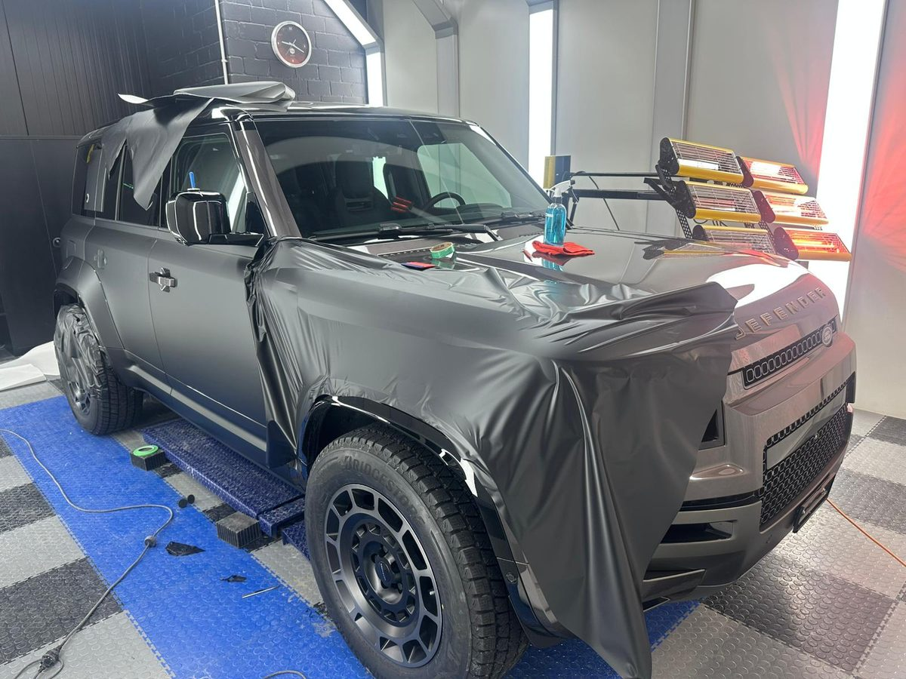

Tesla-Schaden? Hier sind Sie richtig.
Auto Speedy in Altstätten ist Tesla Approved Body Shop. Ihr Tesla hat einen Schaden, oder Tesla hat Ihren Fall an uns weitergeleitet: Melden Sie ihn hier in zwei Angaben.
Der Status als Tesla Approved Body Shop beruht auf einer Aussage des Betriebs. Der Nachweis steht noch aus.
Modell wählen, Meldung ist vorbereitet
Ein Tipp auf Ihr Modell öffnet die Meldung mit gesetztem Tesla-Fall und gewähltem Modell. Fehlt Ihr Modell, wählen Sie «anderes Modell» in der Meldung.
Für Mitarbeitende von Tesla
Leiten Sie einen Fall weiter, tragen die Kundinnen und Kunden die Tesla-Referenz in der Meldung ein. Das Feld ist freiwillig.
Direkt erreichen Sie den Betrieb unter 071 755 88 61 und info@autospeedy.ch.
Welche Angaben Tesla bei einer Weiterleitung mitgibt, tragen wir hier ein, sobald der Betrieb es beschrieben hat.

Schaden melden in zwei Angaben
Name und Telefon genügen. Ihr E-Mail-Programm öffnet die Meldung vorbereitet. Sie senden sie dort ab.